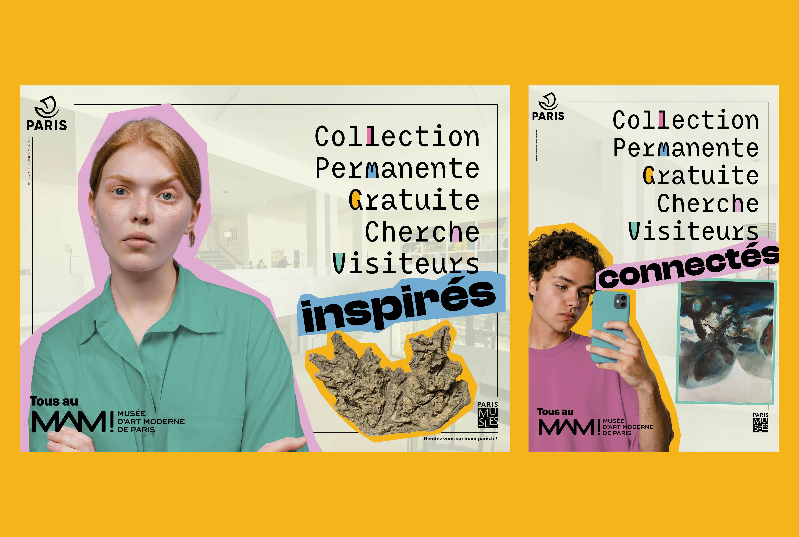

Everybody goes to the Museum of Modern Art !
Conception of a multi-media campaign (billboards, social media, print) aiming to encourage a new public to visit the Museum of Modern Art of Paris' (MAM) permanent collection.
→ In french, the text says "Free Permanent Collection looking for visitors that are ...". Every poster showcases a different type of visitors wether they are art-enthousiats, connected, or skeptical.
This project was created following my bachelor thesis titled "Contemporary Art Museums' visual communication : a cultural democratization tool for France".
→ In french, the text says "Free Permanent Collection looking for visitors that are ...". Every poster showcases a different type of visitors wether they are art-enthousiats, connected, or skeptical.
This project was created following my bachelor thesis titled "Contemporary Art Museums' visual communication : a cultural democratization tool for France".
